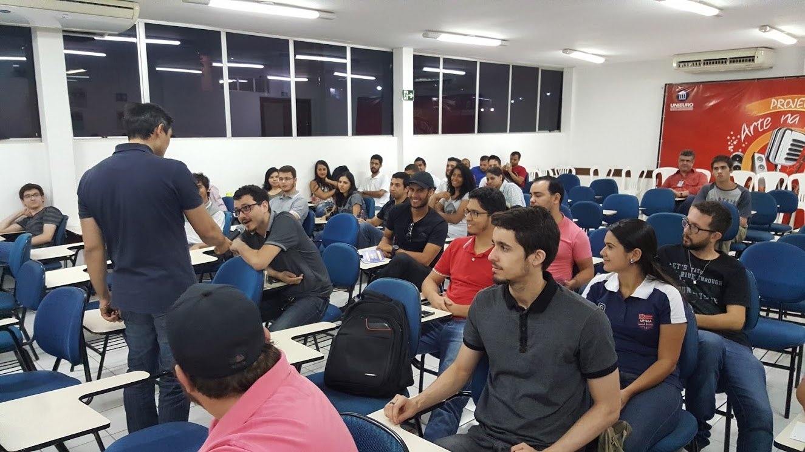

Com o objetivo de aproximar a visão dos alunos de T.I. à realidade concreta do mercado de trabalho, a 7Sight Jr, fábrica de software de sistemas de informação, organiza junto a diretoria do curso , a Semana Acadêmica, com workshops e palestras sobre os temas: DEV, DESIGN, STARTUP e PROJETOS.
